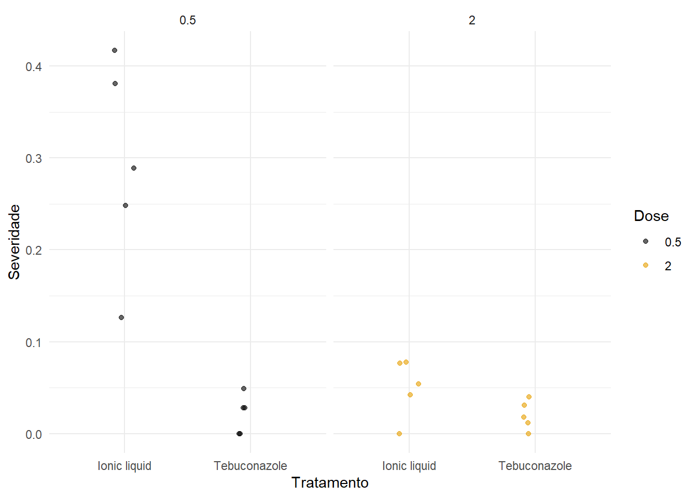
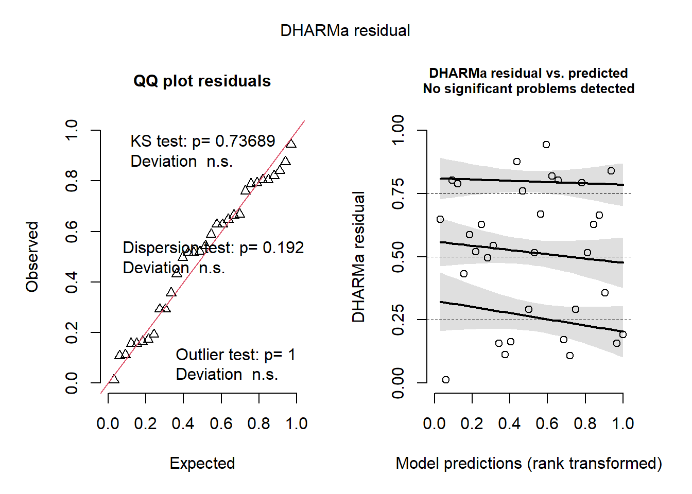
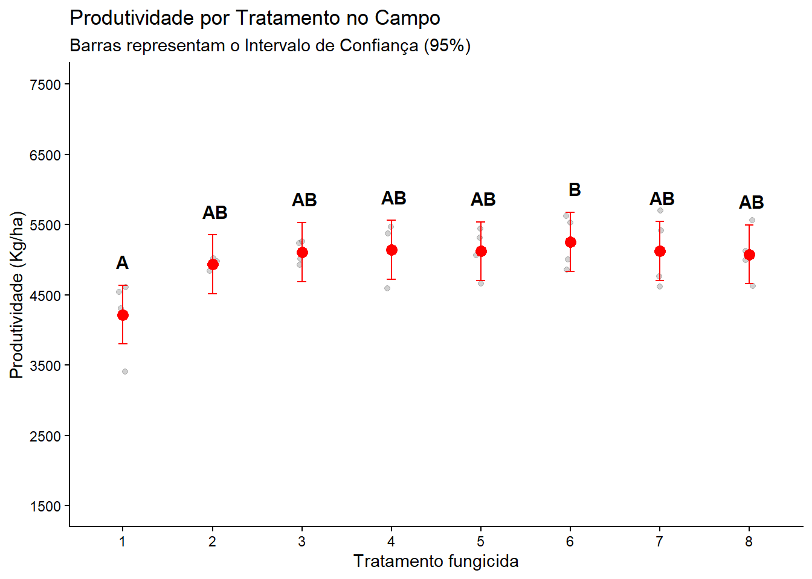
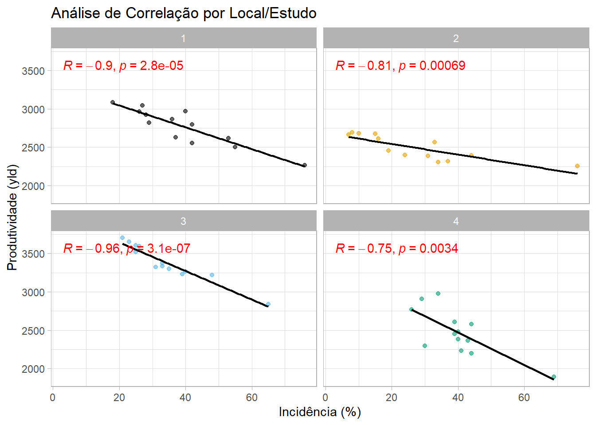
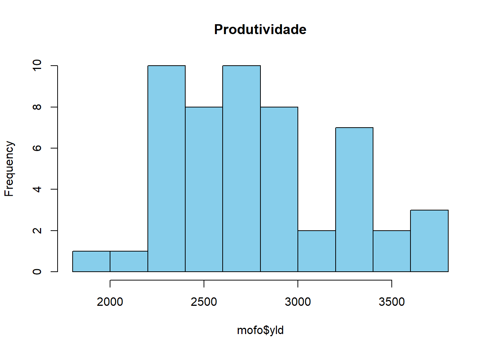
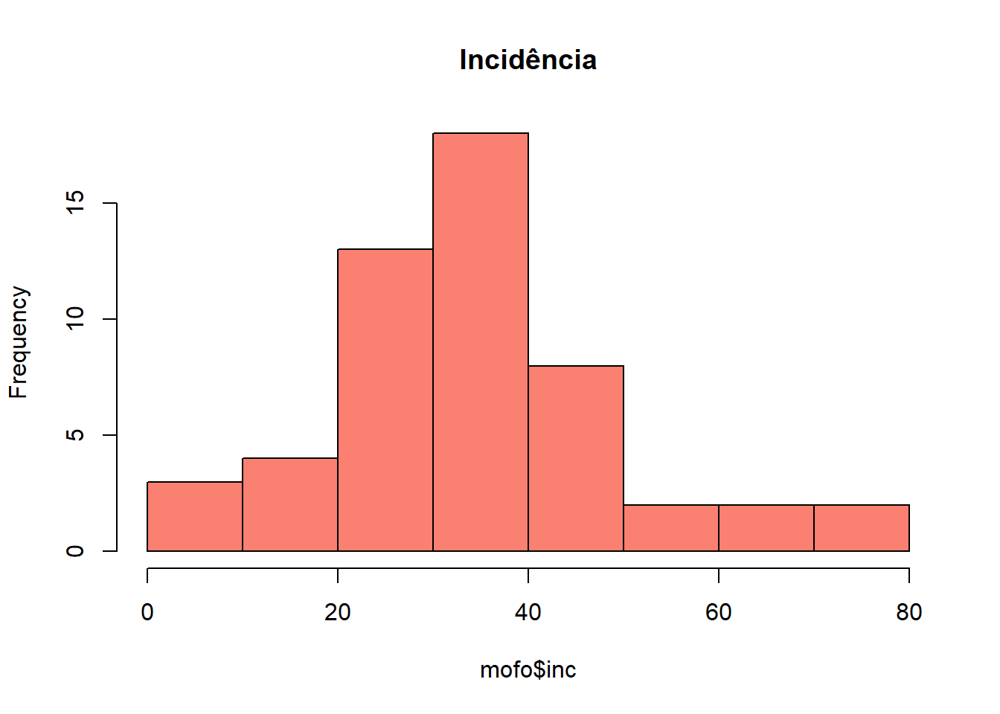
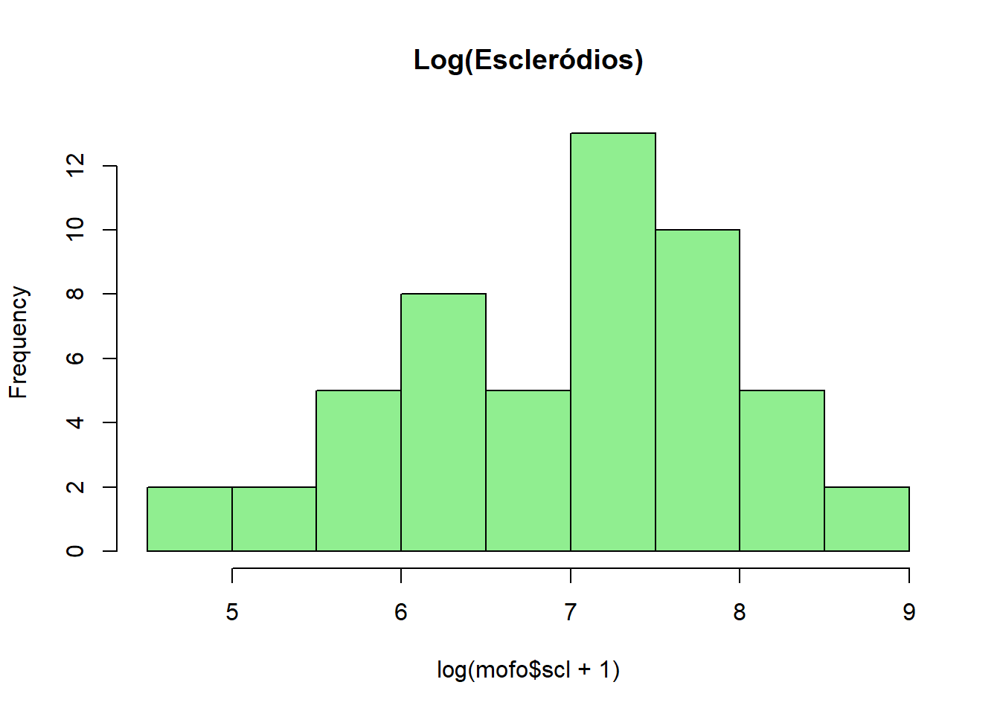

Code
library(readxl)
library(tidyverse)
library(ggthemes)
library(ggpubr)
library(DHARMa)
library(emmeans)
library(multcomp)
library(multcompView)Este documento apresenta a análise estatística de experimentos fitopatológicos, abrangendo desde ensaios em vasos (avaliação de severidade e interação entre doses) até ensaios de campo (blocos ao acaso) e correlações epidemiológicas.
library(readxl)
library(tidyverse)
library(ggthemes)
library(ggpubr)
library(DHARMa)
library(emmeans)
library(multcomp)
library(multcompView)Nesta etapa, carregamos os dados e calculamos a incidência. O objetivo é entender como diferentes tratamentos e doses de fungicida afetam a severidade da doença.
fungicidas <- read_excel("dados_diversos.xlsx", "fungicida_vaso")
fungicidas2 <- fungicidas |>
mutate(incidencia = inf_seeds / n_seeds,
dose = factor(dose))
glimpse(fungicidas2)Rows: 20
Columns: 9
$ treat <chr> "Ionic liquid", "Ionic liquid", "Ionic liquid", "Ionic liqu…
$ dose <fct> 0.5, 0.5, 0.5, 0.5, 0.5, 2, 2, 2, 2, 2, 0.5, 0.5, 0.5, 0.5,…
$ rep <dbl> 1, 2, 3, 4, 5, 2, 3, 4, 5, 1, 1, 2, 3, 4, 5, 1, 2, 3, 4, 5
$ n_sp <dbl> 103, 125, 210, 97, 180, 116, 166, 157, 129, 84, 121, 123, 1…
$ dis_sp <dbl> 13, 31, 80, 28, 75, 9, 7, 12, 7, 0, 0, 6, 3, 0, 4, 3, 0, 4,…
$ n_seeds <dbl> 25, 25, 25, 25, 25, 25, 25, 25, 25, 25, 25, 25, 25, 25, 25,…
$ inf_seeds <dbl> 10, 12, 12, 10, 11, 6, 3, 1, 7, 1, 2, 5, 1, 2, 1, 5, 2, 2, …
$ severity <dbl> 0.12621359, 0.24800000, 0.38095238, 0.28865979, 0.41666667,…
$ incidencia <dbl> 0.40, 0.48, 0.48, 0.40, 0.44, 0.24, 0.12, 0.04, 0.28, 0.04,…Antes de rodar a ANOVA, visualizamos como a severidade se comporta em cada tratamento dentro de cada dose.
fungicidas2 |>
ggplot(aes(treat, severity, color = dose)) +
geom_jitter(width = 0.1, alpha = 0.6) +
facet_wrap(~ dose) +
scale_color_colorblind() +
theme_minimal() +
labs(x = "Tratamento", y = "Severidade", color = "Dose")
Verificamos os efeitos principais e, crucialmente, a interação entre Tratamento e Dose.
# Modelo com interação (Tratamento * Dose)
m3 <- lm(severity ~ treat * dose, data = fungicidas2)
# Diagnóstico de resíduos
plot(simulateResiduals(m3))
# Tabela de ANOVA
anova(m3)Analysis of Variance Table
Response: severity
Df Sum Sq Mean Sq F value Pr(>F)
treat 1 0.113232 0.113232 30.358 4.754e-05 ***
dose 1 0.073683 0.073683 19.755 0.0004077 ***
treat:dose 1 0.072739 0.072739 19.502 0.0004326 ***
Residuals 16 0.059678 0.003730
---
Signif. codes: 0 '***' 0.001 '**' 0.01 '*' 0.05 '.' 0.1 ' ' 1Nota: Se a interação for significativa (p < 0.05), devemos analisar o efeito de tratamentos dentro de cada dose separadamente.
medias_m3 <- emmeans(m3, ~ treat | dose)
cld(medias_m3, Letters = LETTERS)dose = 0.5:
treat emmean SE df lower.CL upper.CL .group
Tebuconazole 0.0210 0.0273 16 -0.03690 0.0789 A
Ionic liquid 0.2921 0.0273 16 0.23420 0.3500 B
dose = 2:
treat emmean SE df lower.CL upper.CL .group
Tebuconazole 0.0202 0.0273 16 -0.03768 0.0781 A
Ionic liquid 0.0501 0.0273 16 -0.00781 0.1080 A
Confidence level used: 0.95
significance level used: alpha = 0.05
NOTE: If two or more means share the same grouping symbol,
then we cannot show them to be different.
But we also did not show them to be the same. No campo, o delineamento costuma ser em Blocos Completos Casualizados (DBC) para controlar a heterogeneidade do solo.
campo <- read_excel("dados_diversos.xlsx", "fungicida_campo")
campo2 <- campo |>
mutate(trat = factor(TRAT),
bloco = factor(BLOCO)) |>
dplyr::select(trat, bloco, PROD) |>
rename(prod = PROD)Ajustamos o modelo incluindo o efeito de bloco. Em seguida, extraímos as letras do teste de Tukey para o gráfico final.
m_bloco <- lm(prod ~ trat + bloco, data = campo2)
# ANOVA e Diagnóstico
anova(m_bloco)Analysis of Variance Table
Response: prod
Df Sum Sq Mean Sq F value Pr(>F)
trat 7 2994142 427735 2.6369 0.0402 *
bloco 3 105716 35239 0.2172 0.8833
Residuals 21 3406384 162209
---
Signif. codes: 0 '***' 0.001 '**' 0.01 '*' 0.05 '.' 0.1 ' ' 1plot(simulateResiduals(m_bloco))
# Médias e Letras
medias_m_bloco <- emmeans(m_bloco, ~ trat)
res_cld <- cld(medias_m_bloco, Letters = LETTERS) |> as.data.frame()campo2 |>
ggplot(aes(x = trat, y = prod)) +
geom_jitter(width = 0.05, alpha = 0.3, color = "gray40") +
geom_point(data = res_cld, aes(y = emmean), color = "red", size = 3) +
geom_errorbar(data = res_cld,
aes(y = emmean, ymin = lower.CL, ymax = upper.CL),
width = 0.1, color = "red") +
geom_text(data = res_cld,
aes(y = upper.CL, label = .group),
vjust = -1.2, size = 4, fontface = "bold") +
scale_y_continuous(limits = c(1500, 7500), breaks = seq(1500, 7500, 1000)) +
theme_classic() +
labs(
x = "Tratamento fungicida",
y = "Produtividade (Kg/ha)",
title = "Produtividade por Tratamento no Campo",
subtitle = "Barras representam o Intervalo de Confiança (95%)"
)
Aqui avaliamos a relação entre a incidência da doença e a produção de estruturas de resistência (escleródios), separando por estudos para evitar o Paradoxo de Simpson.
mofo <- read_excel("dados_diversos.xlsx", "mofo")
mofo |>
ggplot(aes(inc, yld)) +
geom_point(aes(color = factor(study)), alpha = 0.6) +
geom_smooth(method = "lm", se = FALSE, color = "black", linewidth = 0.8) +
stat_cor(method = "pearson", label.x = 3, color = "red", fontface = "bold") +
facet_wrap(~ study) +
scale_color_colorblind() +
theme_light() +
theme(legend.position = "none") +
labs(
x = "Incidência (%)",
y = "Produtividade (yld)",
title = "Análise de Correlação por Local/Estudo"
)
É importante verificar a normalidade das variáveis antes de realizar testes de correlação paramétricos.
hist(mofo$yld, main = "Produtividade", col = "skyblue")
hist(mofo$inc, main = "Incidência", col = "salmon")
hist(log(mofo$scl + 1), main = "Log(Escleródios)", col = "lightgreen")


Conclusão: O fluxo de análise demonstra que a eficácia do fungicida pode depender da dose (interação) e que a produtividade no campo deve ser analisada considerando o efeito de blocos para reduzir o erro residual. A análise de correlação estratificada por estudo previne conclusões errôneas baseadas em dados agregados.